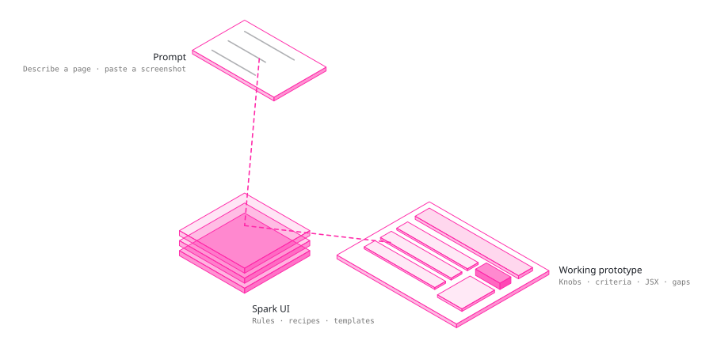
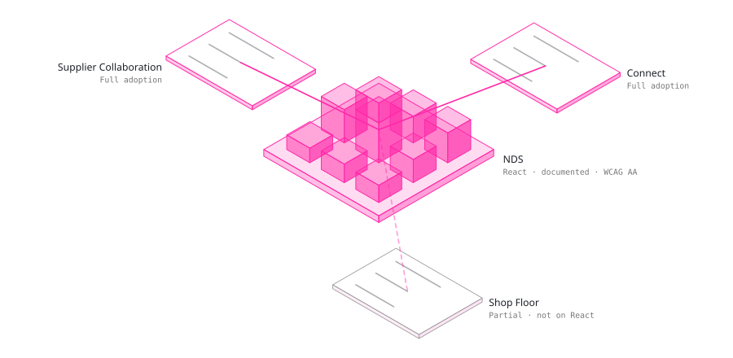
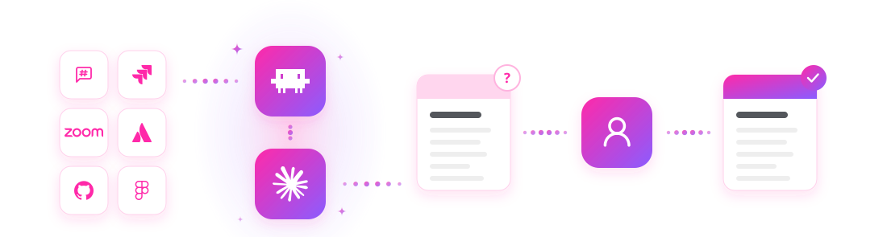

Design Sandbox: from design intent to a working prototype
A prompt-to-prototype tool. Describe a page or paste a screenshot, and Claude Code builds a working prototype from Spark UI's components, recipes, templates and rules. Designers and PMs use it to validate concepts, run usability tests and hand off to developers.

Outcome
[TBD]
Role
[TBD]
Team
[TBD]
Timeline
2026 [TBD: months]
Built with
Claude Code (skills and subagents), React, Vite, Spark UI
The challenge
[TBD: how prototyping and specs worked before, and what hurt.]
Spark UI was built so AI could make the same choices a designer would. The Sandbox puts that to work.
How it works
Describe or paste Users describe a page, its layout, actions and labels, or paste a screenshot.
Claude Code builds it A prototyping skill generates a working React prototype from Spark UI. Users never see the code.
Spark UI is the knowledge base The skill is kept light: the design system's own documentation tells the AI what to use, and the skill warns users when a request breaks a design rule.
Beyond the prototype
Configuration knobs: anyone viewing a prototype can switch it into specific application states, replacing long written specs. Also useful for testing.
Acceptance criteria: a shared space where designers and PMs write them together for handoff.
Developer-ready code: developers can copy the generated JSX.
Design system gaps: a section that flags where the request needed something Spark UI didn't have yet.
In use
Designers use it for concept validation and usability testing; PMs are experimenting with it. It replaced Figma for prototyping.
[TBD: one concrete story: a prototype that led to a test or decision] [TBD: numbers: users, prototypes, time saved]
Where it came from
[TBD: decide whether to include] A summer 2025 hackathon: with a designer and a design engineer, I built an AI prototyping tool on the old design system. It won out of about 12 teams and became the proof of concept for the Sandbox.
What I learned
[TBD: limits, failures, surprises]
→ Related: Spark UI · Nulogy Design System (NDS)
Nulogy Design System: front-end expertise for every product team
Nulogy's first design system, built from scratch in 2018. I researched, designed and documented its components and their APIs, and later led the effort to keep it alive with a much leaner team.

Role
Design system designer (2018–2021); design system lead (2024–2025) [TBD: confirm dates and whether 2024–2025 is in scope]
Team
Me, a second design system designer and 1–2 developers
Timeline
2018–2021 [TBD: or 2018–2025]
Built with
React, styled-components, Figma
Links
nulogy.design · GitHub [TBD: which repos to link]
The challenge
Nulogy's product teams had no front-end expertise. Every team was solving the same interface problems on its own, with inconsistent results. NDS was the first project of a new DesignOps practice: package that expertise once, so developers could build consistent, accessible screens with minimal front-end work.
What I did
Researched every component: best practices and accessibility, before designing anything.
Audited Nulogy's applications to see how each pattern was actually used.
Designed the components and their APIs, and built some of them.
Wrote thorough documentation for designers and developers, published on nulogy.design.
The first version took about six months with a team of four, and met WCAG AA.
[TBD: one concrete story, e.g. research that changed a component, or a key design decision]
Adoption
Supplier Collaboration and Connect adopted NDS fully. Shop Floor adopted it only partly: it wasn't on React, NDS was React-first, and the CSS fallback that would have covered it never got built.
[TBD: component count from nulogy.design; any other numbers]
Keeping it alive with less (2024–2025)
Over the years, investment stopped and started, and the team shrank. When I returned to it as lead, I owned the backlog and the processes: how the system team worked with product teams, a component request process, and design reviews where designers justified going off-system. Justified gaps either became part of the system or local components in a team's Storybook.
With a much leaner team, the governance model changed: we opened the system to outside contributions and actively encouraged them, instead of building everything centrally. When the design team shrank further, we dropped the Figma library: two sources of truth couldn't be maintained.
[TBD: what changed because of these processes]
What it taught me
These lessons shaped Spark UI:
One source of truth. A Figma library and a code library drift apart when a team is small.
Don't tie the system to one technology. React-first meant Shop Floor was left out.
Plan for lean years. A system needs to survive changes in investment.
→ Next: Spark UI case study
AI-assisted knowledge articles
When Nulogy's technical writers were gone, writing help articles fell to my design team. I built a Claude Code workflow that gathers the context, drafts the article and sets it up in Zendesk, so designers spend their time reviewing, not writing.

Outcome
several hours per article down to under one
Role
Product Design Manager; designed and built the workflow
Team
Me [TBD: anyone else involved?]
Timeline
[TBD: months, 2025?]
Built with
Claude Code (skills and agents), Zendesk
The challenge
The technical writers were gone [TBD: when, and how; earlier a writer worked with the team on a dotted line], and help articles still had to ship with every feature. Designers took over. A smaller feature's article took a designer several hours, most of it spent hunting for context spread across tools.
How it works
Gather An agent pulls the context from six sources: Confluence, Jira, Slack, GitHub (code before and after the change), existing Zendesk articles and Zoom transcripts.
Draft A writing skill drafts the article using rules for article type, structure and destination.
Review Drafts are saved locally for a person to review and correct.
Publish A publishing agent creates the configured draft in Zendesk. Only the publish click is left.
(Visual: four-step flow, sources on the left, Zendesk on the right.)
Results
Under 1 hour per article, down from several hours. Almost all of the remaining time is human review.
About 20 articles in about six months, on one team.
Roughly 60 hours saved (estimate).
Beyond design, it helps the entire product development practice.
What I learned
Claude drafts and structures well, and it doesn't make things up when it has the sources. What it can't do well is judge what matters most to the reader. That's why the human review step stays, and why the time saved went into review, not into skipping it.
[TBD: anything else that surprised you?]
What's next
It was a proof of concept. Extending it to in-app copy was planned, but Spark UI took priority.
→ Related: Spark UI · Design Sandbox
Establishing discovery and design process
During 2022, I worked on establishing standardized discovery and design processes across the product development lifecycle at Nulogy. This effort involved establishing the process, training and onboarding product management and design team members, building infrastructure to support the process, enforcing discipline in maintaining the system, and promoting the process across the organization. The essence of the process is captured in the chart below.
Process overviewClick image to zoom
Problem
It is not unusual for B2B product companies to struggle with establishing efficient discovery and design processes. Challenges such as limited access to end users, slow feedback cycles, complex and customer-specific business processes, internal power dynamics within customer companies, and differing needs and goals between buyer and user personas all create significant hurdles for product teams during the discovery and design phases.
Nulogy is no different.
Nulogy’s suite of products varies in terms of maturity and adoption, ranging from industry-standard, well-established products to innovative offerings in the early stages of adoption. The more established a product is, the more data there is to inform the discovery and design process. These varying levels of maturity contributed to divergent processes across teams, making it difficult to synchronize process improvements, measure productivity metrics, and maintain transparency into work progress.
Solution
To address these issues, we needed to create a framework that provided a structured process based on common principles while allowing individual teams the flexibility to adapt it to their unique circumstances. I collaborated with the Director of Product to formulate this process.
The Continuous Discovery framework by Teresa Torres provided a strong foundation for formulating our process. While we adopted most of its concepts, we also introduced modifications to address its shortcomings when applied to enterprise software.
This process not only boosted our efficiency and the quality of our output, but also served as a foundation for collecting productivity metrics and structuring our research documentation and knowledge base. This has enabled the graceful scaling of our discovery and design practice.
After rolling out the process, I continued to promote its adoption. I onboarded new product managers and designers, ensured adherence to the process, and advocated for it across the organization. I also worked with teams to help bridge the gap between the framework and their unique circumstances.
Conclusion
By establishing a unified discovery and design process, we have significantly enhanced our ability to manage diverse product lines and improve overall efficiency. This structured yet adaptable framework has enabled us to streamline our workflows, foster better collaboration (both internaly and externally with clients), and achieve greater transparency. As we continue to refine and promote these processes, we are well-positioned to drive innovation and deliver exceptional value to our customers.
More detailed process overview available upon request.
UX maturity
One of the metrics I use to measure my personal success as a Head of Design is the degree to which I can influence the increase in UX maturity within an organization. Upon my promotion to Design Manager, one of my first tasks was to assess the current level of UX maturity and develop a strategy to advance the practice, thereby enhancing its impact on the business.
Framework
As part of the research for this initiative, I evaluated multiple frameworks and ultimately chose the Nielsen Norman Group’s model, which proved to be the most robust and actionable. This framework defines six stages of maturity and calls for analysis from 4 categories: strategy, culture, process, and outcomes.
UX maturity model overviewClick image to zoom
Process
I started the analysis by listing the behaviors that organization and design team display and circumstances that surround design practice. I used common obstacles defined by framework to guide this process.
Having this structure helped me understand which obstacles we have overcome and which are still to be overcame. It also allowed me to identify common threads (themes) and some variations that can be displayed in different products and teams.
As a final step, I outlined the main obstacles preventing us from reaching the next level, looked into recommendations on how to overcome them, identify areas of improvement that removal of the obstacles would bring, defined desired outcome, and generate actionable insights. At this point no action items were defined, but ultimately the insights from this exercise were used to shape the goals for coming years.
Below are the exemples of stage 3 and 4 anaysis.
Process overviewClick image to zoomProcess overviewClick image to zoom
Outcome
My analysis revealed that we exhibited behaviours aligned with stages 3 and 4 of the model. To move to the next stage, key focus areas included:
Standardizing design and product development processes across all teams
Centralizing documentation across the organization
Establishing UX KPIs across all products
Defining a unified platform design vision encompassing all of our products
As a result, the following goals were set for the years ahead:
Introduce a standardized product development process
Establish UX metrics
Design a "concept car" to drive the unified platform vision
In addition to guiding strategy, the model also improved communication between the design team and the rest of the organization. A document like this made it easier to align goals with internal stakeholders, the broader product development team, and leadership.
More detailed process overview available upon request.
Data driven design / UX metrics
Although we would rely to data in the past we would to it ad hoc, when we needed a particular answer. As a result the design solutions lacked the confidence or required significant manual effort to collect all the data needed to validate the qualtiy of solution. Remove dependancy of qualitative date. However we needed something more recurrent, something continous, low effort and reliable.
As a result we we started collecting:
Product satisfaction survey Pendo
UX KPIs Pendo
Benefits for other departments
Metamorphosis in adoption metrics
Drving many product decisions. Give some examples:
Framework
As part of the research for this initiative, I evaluated multiple frameworks and ultimately chose the Nielsen Norman Group’s model, which proved to be the most robust and actionable. This framework defines six stages of maturity and calls for analysis from 4 categories: strategy, culture, process, and outcomes.
Process overviewClick image to zoom
Process
I started the analysis by listing the behaviors that organization and design team display and circumstances that surround design practice. I used common obstacles defined by framework to guide this process.
Having this structure helped me understand which obstacles we have overcome and which are still to be overcame. It also allowed me to identify common threads (themes) and some variations that can be displayed in different products and teams.
As a final step, I outlined the main obstacles preventing us from reaching the next level, looked into recommendations on how to overcome them, identify areas of improvement that removal of the obstacles would bring, defined desired outcome, and generate actionable insights. At this point no action items were defined, but ultimately the insights from this exercise were used to shape the goals for coming years.
Below are the exemples of stage 3 and 4 anaysis.
Process overviewClick image to zoomProcess overviewClick image to zoom
Outcome
My analysis revealed that we exhibited behaviours aligned with stages 3 and 4 of the model. To move to the next stage, key focus areas included:
Standardizing design and product development processes across all teams
Centralizing documentation across the organization
Establishing UX KPIs across all products
Defining a unified platform design vision encompassing all of our products
As a result, the following goals were set for the years ahead:
Introduce a standardized product development process
Establish UX metrics
Design a "concept car" to drive the unified platform vision
In addition to guiding strategy, the model also improved communication between the design team and the rest of the organization. A document like this made it easier to align goals with internal stakeholders, the broader product development team, and leadership.
More detailed process overview available upon request.
Spark UI: a design system built for people and AI
A code-first design system for Nulogy's new unified platform. I planned the architecture, built it hands-on with Claude Code, and structured the design knowledge so AI could generate screens that follow Spark UI's design decisions.
Context
Behaviour
Styling
Foundations
Rules
Rules, templates, recipesMarkdown · React
Components, utilitiesKendo UI + custom
ThemesTailwind CSS
TokensStyle Dictionary
Outcome
One of the platform's three products fully migrated to Spark UI within months. Built by a team of two.
Role
Design system lead. I led Spark UI from strategy and architecture through design decisions and implementation. I worked hands-on with Claude Code and managed priorities, requirements and feedback to guide its development.
Team
Me, working with one developer who joined a few weeks into the project. The chief architect reviewed and signed off on the architecture.
Two acquisitions left Nulogy with five products, each with its own design and behaviour patterns. In 2026, the company set out to merge three of them into one unified platform (of the other two, one stayed separate and one is being retired). The new platform needed its own design system: one that made the three products feel like one, without inheriting the old products' constraints.
The approach
I'd built a design system before. In 2018, I co-built the Nulogy Design System (NDS) with a team of four. Over the years, investment in it was inconsistent, and the cracks began to show. So rather than patch it, we started from scratch and carried three lessons forward:
One source of truth. Code only, with no separate Figma library to keep in sync. Designers had already moved to code-first prototyping.
Lean on purpose. Build only what a small team can keep healthy, even when investment dips.
Built for the platform. Serve every product equally, not just the loudest one.
Phases
1 monthDecideEvaluated design foundations, frameworks and technologies through research and technical spikes. Established the architecture and key design decisions.
1.5 monthsBuildBuilt the foundations, components, templates, rules and recipes needed to support the first product.
1 monthProveRolled Spark UI out in the first product. Real screens exposed gaps and edge cases, which we addressed to validate and strengthen the system.
OngoingScaleExtending the system across the platform, bringing the remaining products onto a shared foundation.
Architecture
Spark UI separates four concerns: design foundations, styling, behaviour and design context. Each layer has a distinct responsibility, with the aim of keeping changes contained: themes can change without rewriting components, and technology can be replaced layer by layer.
Context
Rules
Written rules for interaction, layout and content. They apply across the layers and cover decisions that code alone can't enforce.
Markdown
Templates
Whole-page structures for index, details and configuration views.
React
Recipes
Repeatable design patterns that combine components, like the filter bar used across list pages.
React
Behaviour
Components
Reusable interface elements, each with its own states and behaviour.
Kendo UI + custom components
Utilities
Shared behaviours that aren't components on their own, such as drag and drop and the notification mechanism.
Kendo UI or custom
Styling
Themes
Apply tokens to components, defining the product's visual appearance in one place.
Tailwind CSS
Foundations
Tokens
The raw design decisions: colour, spacing, typography and motion.
Style Dictionary
Each layer builds on the one below it. Rules apply across all layers.
An architectural trade-off
The behaviour layer was designed around headless components: behaviour and accessibility without styling, leaving the visual layer to control appearance.
I recommended shadcn/ui, which combines Radix's headless primitives with Tailwind — the same technology we planned to use for styling. The team chose Kendo UI for its data visualization capabilities and familiarity with the library.
I recommendedshadcn/ui
Radix headless primitives + Tailwind. Behaviour and styling fully separate.
The team choseKendo UI
Data visualization and familiarity. Unstyled mode for only some components.
There was a trade-off. Kendo's unstyled mode only covers some components, so behaviour and styling couldn't be fully separated. We designed around that limitation, building custom components where Kendo fell short.
Inside the layers
FoundationsSignal colours
Red, yellow and green, inspired by the lamps on factory equipment. They help screens speak the same visual language operators see on the floor.
Open documentation ↗
SearchStatus ▾Line ▾Shift: A ×
ContextRecipes
About five repeatable patterns. One example is the filter bar, which combines search and filters consistently across list pages.
Open documentation ↗
InteractionDestructive actions ask for confirmationLayoutPrimary action sits top rightContentButtons start with a verb
ContextRules
About 20 written rules covering interaction, layout and content. They give AI the decisions and constraints it needs to follow the same design approach as the team.
Open documentation ↗
DocumentationSpark UI Storybook
[Caption coming: what Storybook covers and how teams and AI use it.]
FoundationsSignal colours
Spark UI's colour palette has four categories: contextual (error, warning, success, info), categorical (charts), layout (greys and the primary blue) and signal. Signal colours mirror the stack lights on factory equipment, so a screen showing a production line's state reads the same as the machine in front of the operator.
Every hue runs from 000 to 900 in steps of 100, with fixed roles: 600 for solid surfaces, 300 for borders, and 200 backgrounds with 800 text.
ContextRecipes
A recipe is a tested combination of components with its own usage rules. The filter bar combines a search field, filter dropdowns and chips for active filters. Every list page uses the same recipe, so filtering works the same everywhere, and AI assembles it the same way a designer would.
Spark UI has about five recipes. Each one started as a pattern teams kept rebuilding by hand.
ContextRules
Rules are short, written statements stored with the system, split into interaction, layout and content writing. Most came from review: when the same comment came up twice, it became a rule.
Designers read them in Storybook. Claude Code reads the same files, and the prototyping skill warns when a request would break one.
Building the system
I owned the component requirements and backlog, and guided how each component was integrated, designed and maintained. Most were built on Kendo UI, but the approach varied depending on the component. Each one involved a series of decisions:
Choose the integration approach Decide whether to wrap the Kendo component in Spark UI or export it directly.
Define the API For wrapped components, decide which Kendo props to expose, which to leave out and which behaviours or components to build ourselves. Omitted props remained accessible through kendoProps — a deliberately discouraged escape hatch.
Follow the architecture Build the component using the structure agreed with the chief architect.
Document the decisions Capture architectural decisions and their rationale in ADRs, alongside component documentation.
Review and validate Components went through an automated CI pipeline covering linting, type checks, unit and accessibility tests, Chromatic visual regression and Playwright end-to-end tests, followed by code review. Feedback that came up repeatedly became a written rule.
Once the process was stable, I turned it into a Claude Code skill that guided component creation, generated the supporting files and opened the pull request.
My proudest moment was the first fully green pull request. The architecture, documentation, tests and automated pipeline were working together as one system.
Governance
Spark UI started centralized. At first, the system's knowledge sat with me, and the people using it shaped it through their feedback. The plan was to open the system up as it matured. Once the foundation was validated and adoption began to scale, it would move to a mixed model, with product teams contributing alongside the core team.
Documentation and AI guidance
The GitHub repository was the entry point to Spark UI. From there, Storybook brought the system's knowledge together in one place: foundations, components, recipes, templates, rules, experiments and live examples.
The goal was to make more than the components discoverable. The documentation captured how the system worked, how its pieces fit together and the design decisions behind them. That gave both the team and Claude Code a shared reference to work from.
I also created Claude Code skills for common tasks: adding a component, adding an icon and reviewing changes. These gave AI a repeatable way to work within the system rather than relying on prompts alone.
Spark UI's documentation wasn't an afterthought. It was part of the system itself — making its decisions available to the people and AI building with it.
Accessibility
Our target was WCAG 2.2 AA, and the first release met it, including colour contrast. Every pull request ran automated accessibility checks.
Colour contrast became a point of contention later. Following pushback from some stakeholders, we relaxed the requirements in the default theme. My younger self would have fought that decision to the end. Instead, I set one condition: an accessible theme had to be ready before the product left beta.
Because styling was a separate layer, the accessible theme could be built without changing components. I had completed it by the time my role ended, but it hadn't shipped yet.
Results
When my role ended in November 2026, one of the three products on the new platform ran fully on Spark UI. The other two were in progress.
33%platform coverage
75+components
~20rules
~5recipes
4templates
50+architecture decision records
3Claude Code skills
What I learned
I didn’t need to be an expert in everything. With the original design system, I designed the system while others built the front-end architecture. With Spark UI, I took on both the architecture and hands-on implementation, using Claude Code to help in areas I knew less well, mainly testing.
What made that safe wasn’t the AI. It was knowing where my knowledge was thin and putting checks in place: the chief architect’s review, a full test pipeline, and written rules every change had to follow.
What's next
Spark UI is still in its early stages. The next steps are:
An ownership model for decisions The 50+ architecture decision records had grown without pruning. The plan was for an expert in each area (design, front end and architecture) to own the decisions in that area, keeping the records current and useful.
Component usage monitoring Tracking which components, recipes and templates teams actually use, to guide the roadmap and show where products drift from the system.
Design Sandbox Spark UI is the foundation for a prompt-to-prototype tool that builds working interfaces from the system.